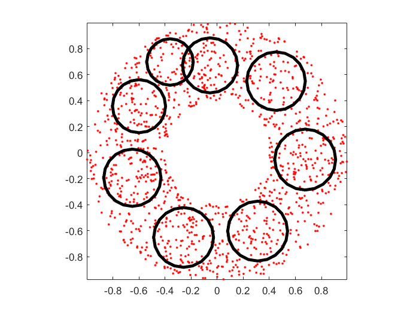
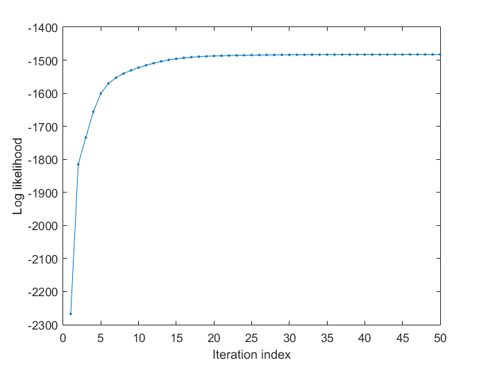

gmmTrain
GMM training for parameter identification
Contents
Syntax
- gmmModel = gmmTrain(data, gmmOpt)
- gmmModel = gmmTrain(data, gmmOpt, showPlot)
- [gmmModel, logLike] = gmmTrain(...)
- gmmOpt = gmmTrain('defaultOpt');
Description
gmmModel = gmmTrain(data, opt) performs GMM training and returns the parameters in gmmModel. I/O arguments are as follows:
- data: dim x dataNum matrix where each column is a data point
- opt: gmm options for configuration and training
- opt.config.gaussianNum: No. of Gaussians
- opt.config.covType: Type of covariance matrix
- opt.train.showInfo: Displaying info during training
- opt.train.useKmeans: Use k-means to find initial centers
- opt.train.maxIteration: Max. number of iterations
- opt.train.minImprove: Min. improvement over the previous iteration
- opt.train.minVariance: Min. variance for each mixture
- opt.train.usePartialVectorization specifies the use of vectorized operations, as follows:
- 0 for fully vectorized operation
- 1 (default) for partial vectorized operation (which is slower but uses less memory)
- gmmModel: The final model for GMM
[gmmModel, logLike] = gmmTrain(data, opt) also returns the log likelihood during the training process.
For demos, please refer to
- 1-d example: gmmTrainDemo1d.
- 2-d example: gmmTrainDemo2dCovType01.m, gmmTrainDemo2dCovType02.m, and gmmTrainDemo2dCovType03.
Note that opt.config determines the configuraton of GMM, which is then used to determine the initial GMM parameters by gmmInitPrmSet.m. In fact, opt.config could be a valid GMM parameters that specify the GMM configuration directly. On the other hand, opt.train determines the parameters for training.
Example
DS=dcData(2);
trainingData=DS.input;
opt=gmmTrain('defaultOpt');
opt.config.gaussianNum=8;
opt.config.covType=1;
opt.train.useKmeans=0;
opt.train.showInfo=1;
opt.train.maxIteration=50;
[gmmModel, logLike]=gmmTrain(trainingData, opt, 1);
Warning: The EraseMode property is no longer supported and will error in a future release. Use the ANIMATEDLINE function for animating lines and points instead of EraseMode 'none'. Removing instances of EraseMode set to 'normal', 'xor', and 'background' has minimal impact. Warning: The EraseMode property is no longer supported and will error in a future release. Use the ANIMATEDLINE function for animating lines and points instead of EraseMode 'none'. Removing instances of EraseMode set to 'normal', 'xor', and 'background' has minimal impact. Warning: The EraseMode property is no longer supported and will error in a future release. Use the ANIMATEDLINE function for animating lines and points instead of EraseMode 'none'. Removing instances of EraseMode set to 'normal', 'xor', and 'background' has minimal impact. Warning: The EraseMode property is no longer supported and will error in a future release. Use the ANIMATEDLINE function for animating lines and points instead of EraseMode 'none'. Removing instances of EraseMode set to 'normal', 'xor', and 'background' has minimal impact. Warning: The EraseMode property is no longer supported and will error in a future release. Use the ANIMATEDLINE function for animating lines and points instead of EraseMode 'none'. Removing instances of EraseMode set to 'normal', 'xor', and 'background' has minimal impact. Warning: The EraseMode property is no longer supported and will error in a future release. Use the ANIMATEDLINE function for animating lines and points instead of EraseMode 'none'. Removing instances of EraseMode set to 'normal', 'xor', and 'background' has minimal impact. Warning: The EraseMode property is no longer supported and will error in a future release. Use the ANIMATEDLINE function for animating lines and points instead of EraseMode 'none'. Removing instances of EraseMode set to 'normal', 'xor', and 'background' has minimal impact. Warning: The EraseMode property is no longer supported and will error in a future release. Use the ANIMATEDLINE function for animating lines and points instead of EraseMode 'none'. Removing instances of EraseMode set to 'normal', 'xor', and 'background' has minimal impact. GMM iteration: 0/50, log likelihood. = -2267.600824 GMM iteration: 1/50, log likelihood. = -1815.076432 GMM iteration: 2/50, log likelihood. = -1733.811737 GMM iteration: 3/50, log likelihood. = -1655.918954 GMM iteration: 4/50, log likelihood. = -1600.547088 GMM iteration: 5/50, log likelihood. = -1570.521438 GMM iteration: 6/50, log likelihood. = -1553.130491 GMM iteration: 7/50, log likelihood. = -1540.683944 GMM iteration: 8/50, log likelihood. = -1530.851668 GMM iteration: 9/50, log likelihood. = -1522.636229 GMM iteration: 10/50, log likelihood. = -1515.447216 GMM iteration: 11/50, log likelihood. = -1509.121779 GMM iteration: 12/50, log likelihood. = -1503.718525 GMM iteration: 13/50, log likelihood. = -1499.293262 GMM iteration: 14/50, log likelihood. = -1495.801076 GMM iteration: 15/50, log likelihood. = -1493.108792 GMM iteration: 16/50, log likelihood. = -1491.051387 GMM iteration: 17/50, log likelihood. = -1489.476236 GMM iteration: 18/50, log likelihood. = -1488.260532 GMM iteration: 19/50, log likelihood. = -1487.311771 GMM iteration: 20/50, log likelihood. = -1486.562235 GMM iteration: 21/50, log likelihood. = -1485.962819 GMM iteration: 22/50, log likelihood. = -1485.477886 GMM iteration: 23/50, log likelihood. = -1485.081394 GMM iteration: 24/50, log likelihood. = -1484.754100 GMM iteration: 25/50, log likelihood. = -1484.481597 GMM iteration: 26/50, log likelihood. = -1484.252944 GMM iteration: 27/50, log likelihood. = -1484.059725 GMM iteration: 28/50, log likelihood. = -1483.895379 GMM iteration: 29/50, log likelihood. = -1483.754742 GMM iteration: 30/50, log likelihood. = -1483.633707 GMM iteration: 31/50, log likelihood. = -1483.528979 GMM iteration: 32/50, log likelihood. = -1483.437897 GMM iteration: 33/50, log likelihood. = -1483.358297 GMM iteration: 34/50, log likelihood. = -1483.288405 GMM iteration: 35/50, log likelihood. = -1483.226761 GMM iteration: 36/50, log likelihood. = -1483.172154 GMM iteration: 37/50, log likelihood. = -1483.123575 GMM iteration: 38/50, log likelihood. = -1483.080179 GMM iteration: 39/50, log likelihood. = -1483.041252 GMM iteration: 40/50, log likelihood. = -1483.006192 GMM iteration: 41/50, log likelihood. = -1482.974485 GMM iteration: 42/50, log likelihood. = -1482.945690 GMM iteration: 43/50, log likelihood. = -1482.919429 GMM iteration: 44/50, log likelihood. = -1482.895374 GMM iteration: 45/50, log likelihood. = -1482.873239 GMM iteration: 46/50, log likelihood. = -1482.852774 GMM iteration: 47/50, log likelihood. = -1482.833758 GMM iteration: 48/50, log likelihood. = -1482.815994 GMM iteration: 49/50, log likelihood. = -1482.799309 GMM total iteration count = 50, log likelihood. = -1482.783543 